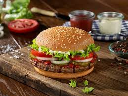

How to make burger

Description
Juicy, big, loaded with toppings of my choice." "High quality beef medium to well with cheese and bacon on a multigrain bun."
Ingredients
- 1 pound ground lean (7% fat) beef
- ½ cup minced onion
- ¼ cup fine dried bread crumbs
- 1 or 2 cloves garlic, peeled and minced
- About 1/4 teaspoon pepper
- 4 hamburger buns (4 in. wide), split
Steps
In a bowl, mix ground beef, egg, onion, bread crumbs, Worcestershire, garlic, 1/2 teaspoon salt, and 1/4 teaspoon pepper until well blended. Divide mixture into four equal portions and shape each into a patty about 4 inches wide.
Lay burgers on an oiled barbecue grill over a solid bed of hot coals or high heat on a gas grill (you can hold your hand at grill level only 2 to 3 seconds); close lid on gas grill. Cook burgers, turning once, until browned on both sides and no longer pink inside (cut to test), 7 to 8 minutes total. Remove from grill.
Lay buns, cut side down, on grill and cook until lightly toasted, 30 seconds to 1 minute.
Spread mayonnaise and ketchup on bun bottoms. Add lettuce, tomato, burger, onion, and salt and pepper to taste. Set bun tops in place.